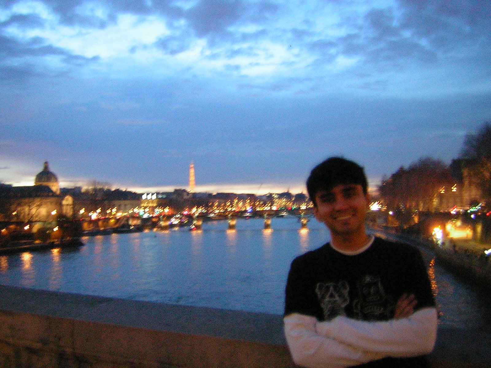

cryptographer @matcauthon49
irif, up-cité
i am a cryptographer and computer scientist.
i am currently working as a phd student under the supervision of geoffroy couteau at the institut de recherche en informatique fondamentale (irif) as part of université paris-cité.
i completed my undergraduate degree in math // cs at cmi. i completed my masters' at oregon state, where i was advised by mike rosulek and jiayu xu.

naman [dot] kumar [at] irif [dot] fr
namankr02 [at] gmail [dot] com
please use these emails for all professional inquiries. i have others, but they don't work well; you certainly won't get an immediate response.